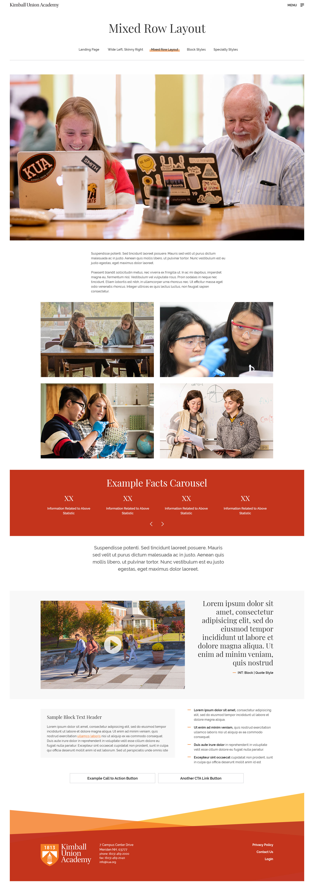
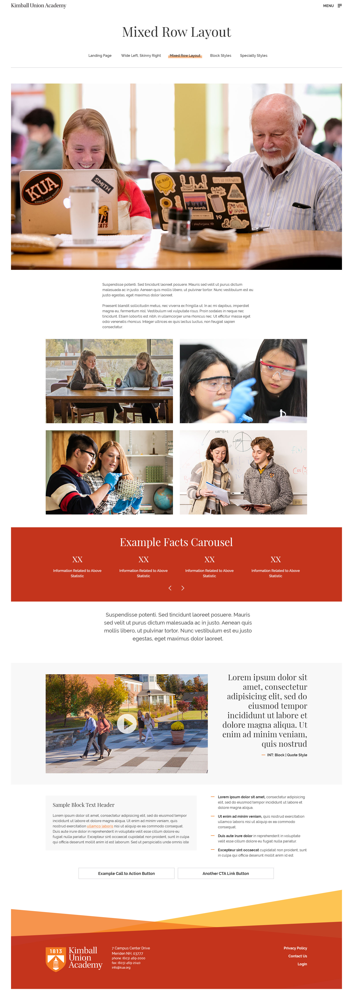

Provided with this design are three sample interior pages that showcase how one may layout a page. They vary in scope and style but are meant to showcase how different typica pages on a school website are laid out.
The last of the provided samples, the "Mixed Row Layout" showcases the flexibilty you'll have with the design. While a landing page isn't right for every page, and a simple layout might not do more engaging content justice, something in the middle might serve a page better.
Another key feature, or rather a lack of feature on this layout is the absence of a page banner. Though this exmaple shows a large photo beneath the page title and navigation (Once more similar to a layout that SPS has), The layout will be built in a manner that it won't be manditory to have the page banner at all.